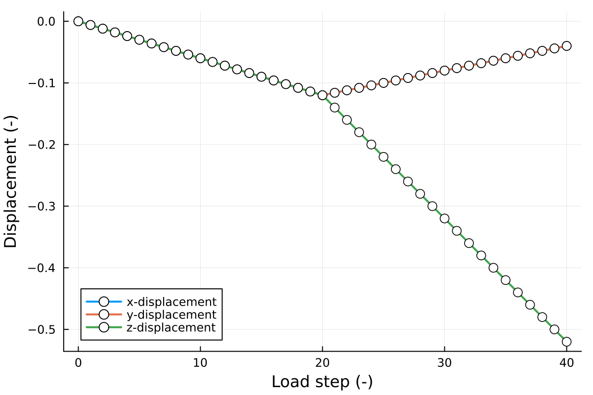

Triaxial Tests
This example shows how to use the code to conduct the element tests under triaxial loading conditions and how the material parameters affect the behaviours. Here the triaxial loading paths are defined as isotropic consolidation (C) and drained (D) compression stages, namely triaxial CD test. The consitutive model is linear elastic Hooke's law.
Package and environment setup
Add the package to the REPL, set the project name, and create the directory for saving the results.
julia> using BracedExcavationjulia> project_name = "ElementCode";
julia> outdir = project_name * "_out";
julia> if isdir(outdir)
rm(outdir, recurseive=true)
end
julia> mkpath(outdir);Generate mesh for element test
An 8-node hexahedron element with 8 Gauss points is created in this tutorial to test the elemental behaviours by BracedExcavation.unithex. If the second option in the function is false, then the gmsh window will popup to show the mesh (Fig. 1); if true, no window will popup.
julia> unithex(project_name, false) # generate the 8-node unit hexahedron elementInfo : 8 nodes 27 elements
Info : Writing 'ElementCode.msh'...
Info : Done writing 'ElementCode.msh'Figure 1. The element mesh generated by Gmsh.
Input parameters
To ensure the input parameters have the consistent type with the code, @kwdef is used to set the data structure of parameters. The default parameters are used to run the tutorials with BracedExcavation.PARAMSDT, and the parameters can be changed for various studies, e.g., sensitivity analysis.
julia> PARAMS = PARAMSDT()PARAMSDT(1.0e6, 0.2, 1.0e9, 0.3, 2.0e9, 0.3, 2000.0, -9.81, 1.0, 1.0, 1.0, 1.0, -200000.0, -0.4, 20, 20, "Hooke3d", 0.385, 0.1, 0.3490658503988659, 0.0, 1.0e8, 1.0e6, 0.3490658503988659, 0.0)Read the mesh data
Read the mesh data generated by Gmsh through BracedExcavation.readgmsh_triaxial, and save them to the BracedExcavation.MESH structure.
julia> mesh = MESH()BracedExcavation.MESH(0, #undef, #undef, #undef, #undef, #undef, #undef, #undef, #undef, #undef, #undef, #undef, #undef, #undef)julia> mesh.coord, etpl, benode = readgmsh_triaxial(project_name * ".msh")Info : Reading 'ElementCode.msh'...
Info : 27 entities
Info : 8 nodes
Info : 4 elements
Info : Done reading 'ElementCode.msh'
([0.0 0.0 0.0; 1.0 0.0 0.0; … ; 1.0 1.0 1.0; 0.0 1.0 1.0], Vector[Any["LondonClay", [1, 2, 4, 3, 5, 6, 7, 8], 8]], [[[5, 6, 7, 8]], [[2, 4, 7, 6]], [[3, 8, 7, 4]]])julia> mesh.mat= getindex.(etp1, 1);
julia> mesh.etpl = getindex.(etp1, 2);
julia> mesh.ngp = getindex.(etp1, 3);Initialise the materials
Initialise the material properties at each Gauss point of the element through BracedExcavation.gpmaterial.
julia> gps = gpmaterial(mesh, PARAMS)1-element Vector{Vector}:
Any[BracedExcavation.GP(4.0e7, 0.2, 0.0, 0.0, #undef, #undef, false, [0.0, 0.0, 0.0, 0.0, 0.0, 0.0], [0.0, 0.0, 0.0, 0.0, 0.0, 0.0], [0.0, 0.0, 0.0, 0.0, 0.0, 0.0], [0.0, 0.0, 0.0, 0.0, 0.0, 0.0], [0.0, 0.0, 0.0, 0.0, 0.0, 0.0]), BracedExcavation.GP(4.0e7, 0.2, 0.0, 0.0, #undef, #undef, false, [0.0, 0.0, 0.0, 0.0, 0.0, 0.0], [0.0, 0.0, 0.0, 0.0, 0.0, 0.0], [0.0, 0.0, 0.0, 0.0, 0.0, 0.0], [0.0, 0.0, 0.0, 0.0, 0.0, 0.0], [0.0, 0.0, 0.0, 0.0, 0.0, 0.0]), BracedExcavation.GP(4.0e7, 0.2, 0.0, 0.0, #undef, #undef, false, [0.0, 0.0, 0.0, 0.0, 0.0, 0.0], [0.0, 0.0, 0.0, 0.0, 0.0, 0.0], [0.0, 0.0, 0.0, 0.0, 0.0, 0.0], [0.0, 0.0, 0.0, 0.0, 0.0, 0.0], [0.0, 0.0, 0.0, 0.0, 0.0, 0.0]), BracedExcavation.GP(4.0e7, 0.2, 0.0, 0.0, #undef, #undef, false, [0.0, 0.0, 0.0, 0.0, 0.0, 0.0], [0.0, 0.0, 0.0, 0.0, 0.0, 0.0], [0.0, 0.0, 0.0, 0.0, 0.0, 0.0], [0.0, 0.0, 0.0, 0.0, 0.0, 0.0], [0.0, 0.0, 0.0, 0.0, 0.0, 0.0]), BracedExcavation.GP(4.0e7, 0.2, 0.0, 0.0, #undef, #undef, false, [0.0, 0.0, 0.0, 0.0, 0.0, 0.0], [0.0, 0.0, 0.0, 0.0, 0.0, 0.0], [0.0, 0.0, 0.0, 0.0, 0.0, 0.0], [0.0, 0.0, 0.0, 0.0, 0.0, 0.0], [0.0, 0.0, 0.0, 0.0, 0.0, 0.0]), BracedExcavation.GP(4.0e7, 0.2, 0.0, 0.0, #undef, #undef, false, [0.0, 0.0, 0.0, 0.0, 0.0, 0.0], [0.0, 0.0, 0.0, 0.0, 0.0, 0.0], [0.0, 0.0, 0.0, 0.0, 0.0, 0.0], [0.0, 0.0, 0.0, 0.0, 0.0, 0.0], [0.0, 0.0, 0.0, 0.0, 0.0, 0.0]), BracedExcavation.GP(4.0e7, 0.2, 0.0, 0.0, #undef, #undef, false, [0.0, 0.0, 0.0, 0.0, 0.0, 0.0], [0.0, 0.0, 0.0, 0.0, 0.0, 0.0], [0.0, 0.0, 0.0, 0.0, 0.0, 0.0], [0.0, 0.0, 0.0, 0.0, 0.0, 0.0], [0.0, 0.0, 0.0, 0.0, 0.0, 0.0]), BracedExcavation.GP(4.0e7, 0.2, 0.0, 0.0, #undef, #undef, false, [0.0, 0.0, 0.0, 0.0, 0.0, 0.0], [0.0, 0.0, 0.0, 0.0, 0.0, 0.0], [0.0, 0.0, 0.0, 0.0, 0.0, 0.0], [0.0, 0.0, 0.0, 0.0, 0.0, 0.0], [0.0, 0.0, 0.0, 0.0, 0.0, 0.0])]To show the simple results of triaxial tests, the displacements in x, y, and z directions, mean effective stress and deviatoric stress at the first Gauss point are saved in the results array.
julia> results = zeros(Float64, 5, PARAMS.LSTPC+PARAMS.LSTPX+1) # dispx, dispy, dispz, p, q
julia> apex = 7 # the apex of the element meshGeostatic state
To consider the influence of the geostatic state, a simplified K0 approached is implemented in this code by BracedExcavation.geostatic_triaxial. The detailed processes of K0 approach can be referred to Links to the equations/methods (to be done later). To confirm the geostatic state, the 3D data is saved as .vtk file in the output directory by BracedExcavation.postpro. The files can be visualised by paraview as shown in Fig. 2.
julia> geostatic_triaxial(mesh, gps, PARAMS.DENS, PARAMS.GRAV, PARAMS.K0, PARAMS.H)
julia> postpro(mesh.uvw, mesh.lstp, mesh.coord, mesh.etpl, gps, outdir)Figure 2. Left: Model mesh of geostatic state; Right: Vertical stress of geostatic state.
Boundary conditions
During the stage of isotropic consolidation, all the boundaries are consolidated to hydrostatic stress (PARAMS.P), -200 kPa in this case through BracedExcavation.boundary_consolidation. After the isotropic consolidation, the lateral stresses are kept constant (-200 kPa), while the top boundary is displacement controlled to prescribed value, here PARAMS.U=0.4 by BracedExcavation.boundary_compression.
julia> bc0, fext0 = boundary_consolidation(mesh.coord, benode[1], benode[2], benode[3], PARAMS.P)
julia> bc1, fext1 = boundary_compression(mesh.coord, benode[2], benode[3], PARAMS.P, PARAMS.U, PARAMS.LSTPX)Triaxial loading: isotropic consolidation
After the geostatic state, the model is isotropically consolidated to PARAMS.P (-200 kPa) under the boundaries defined by BracedExcavation.boundary_consolidation. Figure 3 shows the deformation of element under the isotropic consolidation process.
julia> for lstp = 1:PARAMS.LSTPC
mesh.lstp = lstp
mesh.bc = bc0
mesh.fext = lstp / PARAMS.LSTPC * fext0
loading_triaxial(mesh, gps, PARAMS.CONSTM, G0, PARAMS.A, PARAMS.GAM07, PARAMS.THETA, PARAMS.C, 1)
postpro(mesh.uvw, mesh.lstp, mesh.coord, mesh.etpl, gps, outdir)
results[1:3, lstp+1] = mesh.uvw[apex*3-2:apex*3]
results[4, lstp+1] = -sum(gps[1][1].sigP[1:3]) / 3.0 / 1e3
results[5, lstp+1] = (gps[1][1].sigP[1] - gps[1][1].sigP[3]) / 1e3
end
Figure 3. Isotropic consolidation in the unit element test.
Triaxial loading: drained compression
The drained compression test (BracedExcavation.boundary_compression) is conducted followed by the isotropic consolidation. The full deformation of element is shown in Fig. 4.
julia> for lstp = PARAMS.LSTPC+1:PARAMS.LSTPX+PARAMS.LSTPC
mesh.lstp = lstp
mesh.bc = bc1
mesh.fext = fext1
loading_triaxial(mesh, gps, PARAMS.CONSTM, G0, PARAMS.A, PARAMS.GAM07, PARAMS.THETA, PARAMS.C, 1)
postpro(mesh.uvw, mesh.lstp, mesh.coord, mesh.etpl, gps, outdir)
results[1:3, lstp+1] = mesh.uvw[apex*3-2:apex*3]
results[4, lstp+1] = -sum(gps[1][1].sigP[1:3]) / 3.0 / 1e3
results[5, lstp+1] = (gps[1][1].sigP[1] - gps[1][1].sigP[3]) / 1e3
end
Figure 4. Full deformation for the CD tests, including the consolidation and compression processes.
Plot the figures
The line plots for the triaxial tests BracedExcavation.lineplot_triaxial includes the relationships between load steps and displacements (Fig. 5), the stress strain curves and the effective stress paths (Fig. 6).
julia> lineplot_triaxial(PARAMS.LSTPC + PARAMS.LSTPX, PARAMS.CONSTM, results, bc1, PARAMS.LSTPC, PARAMS.LSTPX, PARAMS.THETA, PARAMS.C, 1, outdir)
Figure 5. Displacements in x, y, and z directions.
Figure 6. Left: Stress-strain relationships; Right: Effetive stress paths.
Further studies
The further studies will implement the small strain overlay model introduced in Benz et al. (2009) to consider the small strain behaviors. We refer Simpson (1992) for the intergranular model and Clayton (2011) for a review of the stiffness at small strain level. For the behaviour after yielding, plastic deformation, we use the perfect Drucker-Prager model to simplify the soil behaviours.
In this study, the constitutive model is the combination of small strain overlay (SSO) model in the elastic region, and Drucker-Prager to govern the yield function, fixed yield surface (perfect plastic).